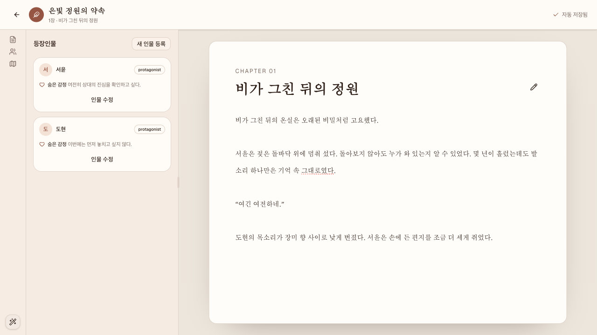

인증 없음, query 없음, 깨끗한 MSW silver-garden workspace. 각 결함 실행은 라우트를 직접 다시 불러와 로딩 완료와 자동 저장됨 상태를 확인한 뒤 시작했다.
뷰포트
Playwright 세션 1280×720, 동일 출처 iframe의 실제 innerWidth/innerHeight로 375×500, 1024×600, 1440×800을 추가 확인했다.
실행 기준
061fe1451867cb20f631e2c59bbc5906dfd303d3
결과 요약
확정1
등록1
중복1
제외0
등록한 버그
심각도 Low
데스크톱 AI 집필 도구 닫기 후 포커스 이탈
티켓
#24 · fast-add 등록 및 fresh 조회 ready · 브랜치 bugfix/ai-도구-닫기-포커스
재현 절차
1280px 이상 폭에서 깨끗한 workspace 라우트를 직접 연다.
AI 도구 열기를 실행해 오른쪽 inline 패널을 연다.
첫 실행은 포인터로 AI 도구 닫기를 누르고, 새로 불러온 두 번째 실행은 Tab으로 닫기 버튼까지 이동해 Enter를 누른다.
패널이 사라진 뒤 document.activeElement와 남아 있는 opener를 확인한다.
기대 결과
패널 닫기 버튼이 제거되면 포커스가 남아 있는 AI 도구 열기 또는 안정적인 workspace control로 복원되어 키보드 흐름을 이어갈 수 있어야 한다.
실제 결과
두 실행 모두 inline 패널과 닫기 버튼은 제거되고 opener는 DOM에 남아 있었지만 document.activeElement는 BODY가 되었다.
사용자 영향
키보드와 보조기술 사용자가 현재 위치를 잃고 다음 Tab 탐색을 문서 시작부터 다시 해야 한다. 저장 데이터 손실이나 전체 흐름 차단은 없어 Low로 분류했다.
관련 위치
frontend/src/pages/writing-workspace/writing-workspace-page.tsx, frontend/src/modules/writing-assistant/ui/writing-tool-panel.tsx. onClose가 assistantOpen만 변경하고 inline opener로 포커스를 되돌리는 처리가 없는 것이 원인일 가능성이 있으나, 구현 전 확인이 필요한 가설이다.
문서
Low 결함이므로 별도 버그 설계·계획은 만들지 않았다. 기존 승인 배경 문서: 설계 · 구현 계획

두 번째 깨끗한 실행에서 키보드 Enter로 inline AI 패널을 닫은 직후 화면. Playwright 측정은 opener가 남아 있는 동안 활성 요소가 BODY임을 기록했다.
중복된 관찰
문맥 탭 rail은 시각적으로 세로지만 aria-orientation="horizontal"이며 ArrowDown이 동작하지 않고 ArrowRight가 선택을 전환하는 현상을 깨끗한 시작 상태에서 두 번 확인했다. 이 결함은 별도 담당자가 설계·계획과 ticket #23을 먼저 등록해 중복으로 분류했으며, 이 보고서에서는 다시 등록하지 않았다.
제외한 관찰
추가 등록에서 제외한 단발성 관찰은 없다. 모바일에서 문맥 Sheet와 AI Sheet를 동시에 강제로 연 상태는 실제 사용자 순서가 아닌 스크립트 조합이므로 결함 판단에 사용하지 않았다.
수행한 검사
planner_setup_page를 한 번 실행한 뒤 정상 로딩, 원고·인물·세계관 탭 전환, AI 열기·닫기, keyboard Tab/Enter와 포커스 상태를 검사했다.
375×500에서는 문맥과 AI가 Sheet, 1024×600에서는 문맥이 inline·AI가 Sheet, 1440×800에서는 문맥과 AI가 resizable inline 영역으로 표시됐고 세 크기 모두 문서 가로 overflow가 없었다.
확정 결함은 직접 라우트를 다시 불러오는 깨끗한 시작 상태에서 포인터 1회와 키보드 Enter 1회로 각각 재현했다.
네트워크 확인 결과 GET /api/projects/silver-garden/workspace와 GET /api/projects/silver-garden/story-bible는 200이었고 예상 밖 동적 요청은 없었다.
콘솔에는 애플리케이션 예외가 없었고 /favicon.ico 404 한 건만 기록됐다.
zellij-agent ticket-worker list --json로 등록 전 중복을 확인하고, fast-add 뒤 fresh JSON에서 ticket #24의 ready, 제목, 요약, prompt, 브랜치와 빈 spec/plan 값을 대조했다.
.codex/agents/tests/validate-bug-hunter.sh는 선행 설정 검사에서 exit 1이었고, 새 보고서만 검사한 개별 validator는 토큰 0개, 필수 제목 8개, anchor 1개, 로컬 Markdown 링크 2개, 증거 이미지 1개로 통과했다.
제약 및 미확인 항목
Playwright-test MCP에 viewport resize 도구가 없어 요청된 크기는 동일 출처 iframe 내부의 실제 viewport로 검증했으며 브라우저 최상위 chrome 자체의 resize는 확인하지 못했다. 장애 응답과 자동 저장 failure/recovery는 데이터 변경 제한 때문에 이 retry 범위에서 다시 유발하지 않았다. 제품 원인은 구현 전 가설이다. 공식 전체 validator는 기존 수정 상태의 .codex/agents/bug-hunter.toml에서 missing instruction: zellij-agent ticket-worker list --json으로 실패했으므로, 이 새 HTML의 개별 통과 결과와 구분한다.